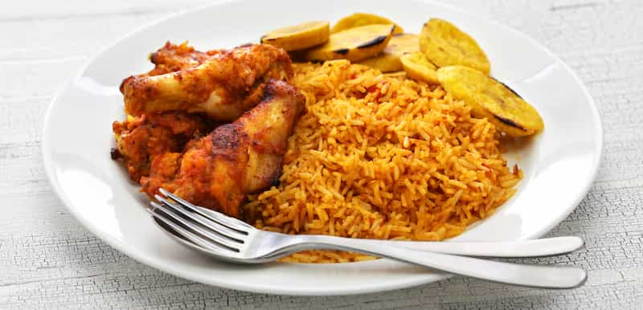

Welcome to Naija Food Heritage
Celebrating the rich and diverse culinary traditions of Nigeria, from jollof rice to egusi soup.
Regional Recipes
Jollof Rice
A spicy, tomato-based rice dish loved across Nigeria.
Region: Nationwide
Egusi Soup
A rich, melon-seed-based soup often served with pounded yam.
Region: Igbo
Suya
Spicy grilled meat skewers, a Northern Nigerian delicacy.
Region: Hausa